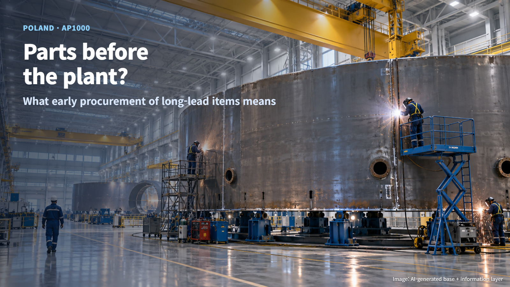
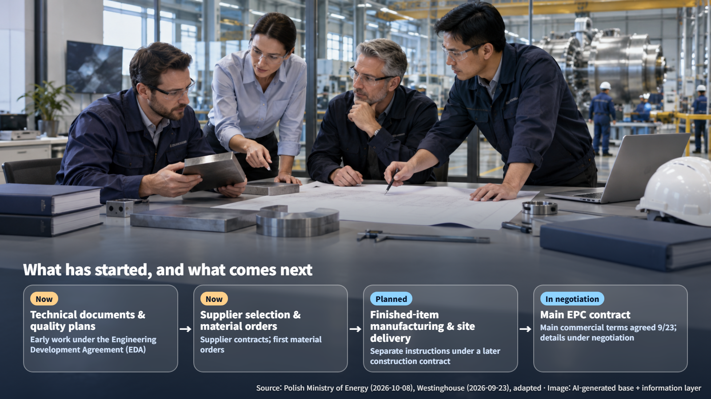
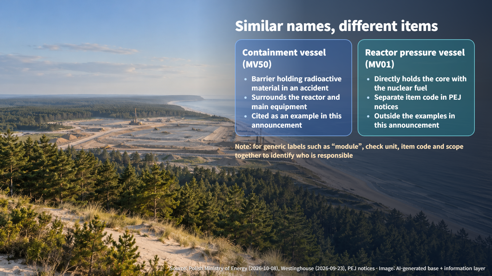

Poland · AP1000 Procurement
Parts Before the Plant? Poland Starts Early Procurement of AP1000 Long-Lead Items
PEJ has instructed Westinghouse to begin early procurement of long-lead items for Lubiatowo-Kopalino Unit 1, while finished-component manufacturing and the main EPC contract are still ahead.
"They have not signed the construction contract yet, and they are already ordering parts?" Anyone following news about Poland's first nuclear power plant might reasonably ask that. The sequence looks reversed, but on a large nuclear project it is natural to start with the work that takes the longest. What matters is understanding exactly how far "starting to order" goes.
On October 8, 2026, Poland's Ministry of Energy announced that Polskie Elektrownie Jądrowe (PEJ), the Polish nuclear plant developer, had instructed Westinghouse of the United States to begin early procurement of long-lead items for the nuclear island of Lubiatowo-Kopalino Unit 1. The nuclear island is the part of the plant that houses the reactor and its key related systems. Let us walk through what this step covers and what comes next.

What Long-Lead Items Are: Starting With the Slowest Parts
Long-lead items (LLI) are components that take so long to design, manufacture and deliver that the design work, materials and production capacity have to be lined up before construction begins. Think of booking a popular wedding venue well in advance: you get in line first for whatever has the longest wait, so the whole schedule does not slip.
The announcement covers six key items for the nuclear island. The government cited the containment vessel and related structural modules as examples, and the full list has not been disclosed. The accurate picture, for now, rests on the items that have been made public.
The announcement also states the purpose. The aim is to secure time for detailed negotiation of the main EPC (Engineering, Procurement and Construction) contract, under which one party takes on design, procurement and construction together, while reducing the risk of delays caused by long-lead items. In effect, negotiations at the table and supply-chain preparation are moving in parallel.
What Has Started and What Comes Next
This instruction is work under the existing Engineering Development Agreement (EDA). The published scope of current work is preparing technical documentation, drawing up quality and oversight plans, selecting and contracting suppliers, and starting to order the materials needed for manufacturing.
Manufacturing of finished components and delivery to the site are planned under separate instructions issued under a later construction contract. Put simply, what has started now runs from organizing the design documents and deciding how quality will be controlled, through contracting the companies that will build the parts, to placing the first raw-material orders. Building the six finished items in the factory and shipping them to the site belongs to the next stage. Prices, delivery dates and item-by-item contract terms have not been disclosed in this announcement.

The main EPC contract is on a similar track. On September 23, the Westinghouse–Bechtel consortium and PEJ announced agreement on the main commercial terms of the EPC contract, while the detailed terms and annexes remain subject to further negotiation. Signing the main EPC contract is still ahead. On the division of roles, the government announcement explains that Westinghouse is responsible for the nuclear part in the broad sense, and that the first long-lead items under Bechtel's responsibility have already been ordered.
Containment Vessel and Reactor Vessel: Two Different Items
The containment vessel cited in the announcement is the barrier that holds radioactive material inside in the event of an accident. Picture a large protective shell surrounding the reactor and its main equipment from the outside. The reactor pressure vessel, by contrast, is the vessel that directly holds the core, where the nuclear fuel sits.
The names are similar and easy to mix up, but they are separate items. PEJ's notices also identify them with separate codes: MV50 for the containment vessel and MV01 for the reactor vessel. Writing "reactor pressure vessel" where the announcement says "containment vessel" turns it into an entirely different story.

The same care applies to the word "module." A generic label such as "module" is too broad to tell whether Westinghouse or Bechtel is responsible. An accurate picture comes from checking the unit, the item code, and the scope of design and on-site assembly together.
Making Early-Ordered Parts Fit Later: Design and Quality Records
Early procurement comes with homework. What happens if materials are ordered first and the design changes in the meantime? That is why the key is continuity of design and quality records.
Westinghouse's published quality manual, QMS-A Revision 8.1 (dated April 12, 2024), describes a system that builds technical and quality requirements into procurement documents and controls supplier evaluation, oversight and acceptance. Procurement documents here include drawings, specifications and supplier quality requirements as well as the order itself. When the design changes, the organization that wrote the original requirement passes the change information to the procurement organization, which formally notifies the supplier. The manual sets out Westinghouse's public quality framework; the terms of the individual Polish contracts are set in those contracts.
If early materials were ordered against an older revision of a drawing and the design then changes, the impact of the change and the point at which it applies have to be stated clearly. It is like setting out with an old map: you need to note exactly where you switch to the new one. In addition, factory shipment and acceptance for installation and use on site are two separate decisions. Once a component leaves the factory, it still goes through its own acceptance on site before it is put to use.
Quality credentials fit the same picture. The government announcement expects Polish companies with quality qualifications at the level of ASME NQA-1 to take part. NQA-1 certification is a system in which a third party audits and certifies the quality assurance program of organizations supplying items and services with nuclear safety functions. Approval as a supplier for a specific item and winning an order are decided separately, item by item.
Ordering parts before the construction contract is a way of buying time, and the sequence makes sense on that basis. What has begun is the preparatory stage; manufacturing of the finished components and the main EPC contract are the gates still ahead. Simply knowing which stage sits behind the words "ordering has begun" makes nuclear news much easier to read.